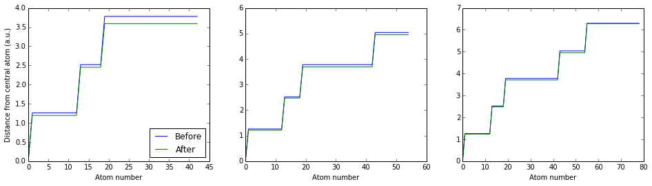

Title
Analysis of the dynamics of a noble gas cluster.
We have performed simulated annealing of a noble gas fcc atomic cluster with a monte-carlo molecular-dynamics approach. The atoms are confined by the Leonard-Jones potential and are annealed by adding energy and integrating the equations of motion. The heat capacity of the system is investigated by adding incremental energy to the system and allowing the atoms to gain a brownian velocity. Further systematics of the vibrational spectrum are investigated.
Table of contents.
Introduction
Molecular dynamics is a computational technique that investigates the behaviour of atoms in the context of a numerical N-body simulation. Given a set of forces, the atoms are allowed to interact for a given time, the motion of the atoms is determined by numerically solving the equations of motion of the system. Molecular dynamics simulations is especially useful in the field of materials science. It is important to understand the properties of interacting atoms when designing various semiconductor devices, creating novel materials and understanding the various properties of existing materials. Since the molecular systems have such vast numbers of interactive bodys, it is impossible to understand the properties of the system analytically. Molecular dynamics simulations hope to solve this issue. In this report we investigated the properties of a hypothetical face centred cubic lattice with 3, 4 and 5 shells.
Fig 1. Atomic structure of (a) a primitive cude, (b) body centred cube and (c) face centred cubic.
The atoms in the cluster were confined by the Lennard-Jones (LJ) potential. $$V_{LJ} = 4\epsilon [(\frac{\sigma}{r})^{12} + (\frac{\sigma}{r})^{6}].$$ Physically $\epsilon$ is the depth of the potential well and $\sigma$ is the finite distance where the interatomic potential is zero. In this report we assign $\alpha = 4 \epsilon \sigma^{12}$ and $\beta = 4 \epsilon \sigma^{6}$. We then set $\alpha = \beta = 1$.

Fig 2. Plot of the Lennard-Jones potential.
The LJ is a simple model of the interation between a pair of neutral atoms. The $r^{-12}$ term described the Pauli repulsion at short range due to the overlapping electron orbitals. The $r^{-6}$ is the attractive term that incorporates the effects of the Van der Waals interatomic forces at longer ranges.
In this report first the energetic effects of annealing the cluster was investigated. First the atoms were placed on an fcc lattice. We integrate the equations of motion of the cluster (integrate the system), with damping to allow the atoms to lose energy, and see how the atoms relax into more energetically favourable positions. The binding energy change between the atoms is then found. The dynamics of the cluster was solved by numerically integrating the equations of motion of the atoms by the Leapfrog method.
Then the heat capacity of the cluster was investigated by gradually adding energy to the system, a Monte Carlo approach was taken when adding energy to the atoms. Random velocities were added to the particles from a Maxwell distribution at added energy dE. Heat capacity is defined as the heat energy that needs to be added to the system in order to change its temperature. Since at the molecular level temperature is exactly the vibration of the atoms, we can see how the kinetic energy of the atoms changes as energy is added to the cluster. The relationship between the added energy and the average kinetic energy of the particles was plotted. It is seen that the cluster first starts harmonically vibrating, it then starts to evaporate and finally becomes a noble gas cluster at higher energy.
Finally the vibrational spectrum of the system was investigated by taking the velocity autocorrelation of all the particles. The fourier transform of the autocorrelation then gives the vibrational harmonic modes of the cluster at low energy.
Results
Molecular annealing
To investigate the annealing of the cluster the total energy of the cluster was plotted against time. To simulate the natural movement of the atoms in the Lennard-Jones potential the equations of motion were numerically integrated with the total energy of the system being recorded at each time step. The total energy is the sum of the internal potential energy, the external potential energy and the kintetic energy for all particles.
Energy versus time is plotted in Fig 3 for various damping parameters gamma. This total energy was investigate in clusters with 3, 4 and 5 shells. The equations of motion were given a damping factor to force the particles to lose energy and let the settle into equilibrium positions.
Fig 3. Total energy vs time for 3, 4 and 5 atom shell clusters vs various oscillator decay parameters.
The time step dx was 0.004. The units of this time are arbitrary. Clearly the total energy in all cases is negative as the atoms are bound. It is not expected that the atomic distances should change very much from the fcc case, and this clear from Fig 4, where the distance of each atom from the central atom is plotted.

Fig 4. Distance of each atom from the central atom, first for the fcc lattice created algorithmically and secondly plotted after the system is integrated, with damping, for a time period to allow it to settle.
In Fig 5. the increase in binding energy after annealing is plotted for different numbers of atoms in the system. The increase in binding energy is a direct linear function of the number atoms in the cluster.
| # shells | # atoms | Binding energy |
| 3 | 43 | 0.506 |
| 4 | 55 | 0.724 |
| 5 | 79 | 1.144 |
Fig 5. Increase in binding energy after annealing versus total number of atoms in the cluster.
Heat capacity
In this section we examine the results of adding energy to the system. Energy was added to the system up to E = 3, in steps of 0.01. The energy was converted into velocities for each particles, the velocities were set by a monte carlo routine which gave each particle in the cluster a random velocity such that the average added energy to the entire system was dE.
The system was integrated for a time each time energy was added. From Fig 6. we see that after adding energy of 3, the atoms are distributed randomly and the total size of the cluster has increased. The system was then allowed to lose energy, by adding a damping factor of 0.5 while integrating. We see that as the velocity of each particle decreases the interatomic forces start pulling the atoms closer together. The result is an energetic status of the system being similar to that of the fcc before heating. In this case the atoms did settle back into their initial equilibrium positions, this was a limiting factor of the limited computational power used in this project.
Fig 6. Position of each atom in the cluster for a 5-shell cluster. First after annealling and before any energy was added, then after energy of 3 (a.u.) was added and finally after allowing the system to cool down.
The energies at the various states are stated in Table 2. In each case the energy after heating and then cooling is very similar to the initial energy before cooling.
Hypothetically if one could integrate the system for a far longer time while cooling the atoms would settle back into their fcc equibrium positions, or more precisely, the cluster would settle, each atom may be swapped with another atom.
| # shells | $C_{low}$ | $C_{high}$ | Ratio
| Initial energy | Final energy | Cooled energy |
|
| 3 | 1.09 | 1.67 | 1.53 | -47.62437 | 21.3897 | -48.936 |
| 4 | 1.2 | 2.49 | 2.06 | -67.708937 | 19.306 | -62.8944 |
| 5 | 0.988 | 1.87 | 1.89 | -103.82 | 30.383 | -100.78 |
Fig 7. Average kinetic energy per particle versus energy applied to the cluster. Table 2. Heat capacity in the harmonic, and gas regime.
When the cluster is in its rigid, harmonic regime the theoretical heat capacity is 3$kT$. each degree of freedom of the particles contributes $1.2 kT$ to the heat capacity. In the harmonic regime each particle has 3 degrees of freedom due to the velocities in the $\hat{x}$, $\hat{y}$ and $\hat{z}$ directions. They have further degrees of freedome due to the interaction of the particles on each other, each particle is acted on by the other $N-1$ particles. In the $\hat{x}$, $\hat{y}$ and $\hat{z}$ directions there are $3(N-1)$ extra degrees of freedom, which contribute $1/2 kT$ to the heat capacity. The total heat capacity of the system in the low-energy, harmonic regime is then $$C_{low} = (3(N-1) + 3N )/2 kT$$ if $N>>1$ then the heat capacity is $C_{low} = 3N/2 kT$.
In the high energy regime, where the cluster evaporates into a gas the theoretical heat capacity is $C_{high} = 3/2 kT$, this is due to the degrees of freedom of the velocities. The degrees of freedom contribution from the bounding potential is gone because the particles have more enrgy to overcome the potential. They are also farther away from each other, lessening the interatomic interactions. The KE vs E graph was fitted with a line in the harmoic and gas regime (black lines in plot). The heat capacity in each case is the inverse of the slope.
The fitted heat capacities are reported in Table 2. In each case the ratio between the heat capacity at high and low enery was determined. The theoretical ratio between the heat capacities is 2. $$\frac{C_{high}}{C_{low}} = \frac{3 kT}{3/2 kT} = 2.$$ The determined ratios for 3, 4 and 5 shells were 1.53, 2.06 and 1.89 respectively. The values could probably be made closer to 2 with longer integration time between energy increments, however the determined values are reasonable.
The flat part of the heat capacity plot is due to the latent heat of evaportation. Before the atoms evaporate into a gas the latent heat of evaportation energy barrier needs to be overcome. Further work could be to determine exactly the parameters which this energy barrier depends on.
Vibrational spectrum
To analyse the vibrational spectrum of the cluster the velocity autocorrelation function (VAF) was calculated. If the velocity vector for a systems of atoms is $v(t)$ then the VAF can be written as $$C_v(t) = \frac{v(0)v(t)}{v(0)v(0)}.$$ If the motion of the atoms is oscillatory then the VAF will characterize the oscillations because the atoms will self-correlate in a periodic fashion. To calculate the vibrational spectrum we first must take the Fourier transform of the VAF: $$F(\omega) = \frac{1}{\sqrt(2\pi)} \int_{- \infty }^{\infty} exp(i \omega t) C_v(t) dt$$ The vibrational density of states is then given by $$P(\omega) = F^2(\omega)$$ We only want to analyse the frequencies of the peaks of the vibrational density of states, thus we need only look at the real parts of the Fourier transform.
Fig 8. Velocity autocorrelation and vibrational spectrum for 3, 4 and 5 shells. The anharmonic case was taken with 5 shells.
Figure 8 shows the numerically calculated VAF for 3, 4 and 5 shells with added energy of 0.00001. The anaharmonic case was taken with 5 shells and energy of 1. The VAF for the 3 shell case, show very slight modulation, implying the harmonic mode is not very intense. The modulation grows in the 4 shell case and become very clear, with defined beats, in the 5 shell case.
The Fast Fourier transform of the VAF was taken to determine the vibrational spectrum. There is a clear frequency peak in th 3, 4 and 5 shell case. With a slight redshift as the number of shells grows. This could be due to the fact that the 5 shell case is a physically bigger cluster so the wavelength of the harmonic mode can be bigger. This result suggests that there is one harmonic mode of the cluster when it is very cold (has very little energy applied). There seems to be no be no prominent frequency mode when the cluster is in the nearer the evaportation regime, when the added energy was 1.
Conclusion
In this report we discussed a monte carlo based simulation of the molecular dynamics of a face centred cubic cluster of atoms. The annealing process was studied and the binding energy after annealing determined.
The cluster was heated and it was shown that the cluster changes phase. It goes from a harmonic cluster of atoms to a noble gas, moving through a stage where the latent heat of evaporation energy barrier must be overcome.
The heat capacities of the harmonic and gas stage were measured and the ratio of the two was shown to match the theoretical value of 2.
The vibrational spectrum of the cluster was analysed by way of taking the Fourier transform of the velocity autocorrelation function. It was shown that there is one prominent harmonic mode when the cluster is very cold.
This work in the future could be applied to a real gas cluster of solid state system. The beauty of the numerical approach is that it is flexible to changes in the potential model.
Methods
Algorithms
Molecular annealing
The atoms were placed on a fragment of an fcc lattice such that the nearest neighbour distance is $$r_{nn} = (2\alpha/\beta)^{1/6},$$ These interatomic distances minimize the Lennard-Jones potential. The atoms are placed in concentric "shells" about a central atom which is at (0,0,0).
The equations of motion of the system were integrated by using the leapfrog integration method. Before the integration was done forces on each particles at positions were calculated. The internal forces were calculated from the Lennard Jones potential. The The external forces on each particle from an external confining "box" potential were also calculated. $$V_{ext}(x,y,z) = V_0 [exp{(2x/L)^4} + exp{(2x/L)^4} + exp{(2x/L)^4} -3].$$ In all cases in this report $V_0 = 0.01$ and $L = 20$.
The leapfrog integration was then used. Leapfrog integration is equivalent to updating positions $x(t)$ and velocities $v(t)=\dot x(t)$ at interleaved time points, staggered in such a way that they 'leapfrog' over each other. Assuming the mass of the particles is 1, so that the acceleration and forces become equal. The algorithm is presented here in pseudocode. For simplicity only one dimension $\hat{x}$ is dealt with here.
# dt = time step
# gamma = decay factor
step = dt/2
gs = gamma*step
velfac = exp( -gs )
if ( abs(gs2) lt 1e-5)
forfac = step*(1 + gs*(1-gs/3)/2)
else
forfac = (1-velfac)/gamma
while(t lt tmax){
for(i=0; i lt Natoms; i++){
v[i] = velfac*v[i] + forfac * (forces_int[i] + forces_ext[i])
x[i] = x[i] + dt * v[i]
}
t = t + dt
forces_int, forces_ext = Forces(x, t)
for(i=0; i lt N; i++){
v[i] = velfac*v[i] + forfac * (forces_int[i] + forces_ext[i])
}
}
Heat capacity
To calculate the heat capacity of the system energy increments were added to the cluster. The system was integrated as above for a period after adding energy. To add energy to the cluster random increments were added to the velocities of N particles, such that the average energy per particle increases by dE.
# random() returns a homogeneously distributed random number
# on the interval [0, 1]
kT = 4.0/3.0 * dE;
for (i=0; i lt N; i++){
r = sqrt(- kT * log( random() ));
t = pi2 * random();
vx[i] += r * sin(t);
vy[i] += r * cos(t);
r = sqrt(- kT * log( random() ));
t = pi2 * random();
vz[i] += r * sin(t);
}
The kinetic energy of a single atoms was calculated by summing the squares of the velocity components and dividing by two.
Vibrational spectrum
The velocity autocorrelation function was calculated as follows. The pseudocode here is simplified to only one dimension.
Since the autocorrelation is the relationship between the velocities at time $t$ and time $t + \tau$. We first need to fill the initial velocities.
#C_v holds the autocorrelation values
#vxold holds the velocities at each time itau
for(itau=maxtau-1; itau >= 0; itau--){
integrate_system()
C_v[itau] = 0.0;
for(i=0; i lt N; i++){
vxold[i][itau] = vx[i];
}
}
for(iav=0; iav lt MaxTime ; iav++){
integrate_system()
for(itau=maxtau-1; itau>0 ; itau--){
for(i=0; i lt N; i++){
vxold[i][itau] = vxold[i][itau-1] # shift old velocities
C_v[itau] += vx[i]*vxold[i][itau] # accumulate average
}
}
for(i=0; i lt N; i++){
C_v[0] += vx[i]*vxold[i][itau]
vxold[i][0] = vx[i];
}
}
Implementation
The implementation of the code for the report was done in the C programming languate with provided C and fortran libraries. The libraries used were:
- fcc_posn.c - Places the atoms on the cubic cluster.
- forces.c - Calculates the forces acting on the N atoms in the cluster.
- int_dyn.c - integrates the equations of motion.
- randveladd.c - Adds random velocities to each particle such that the total energy of the cluster raises by dE.
- int_dyn.c - integrates the equations of motion.
The codes were compiled using gcc and gfortran on a Debian Linux 32 bit system.